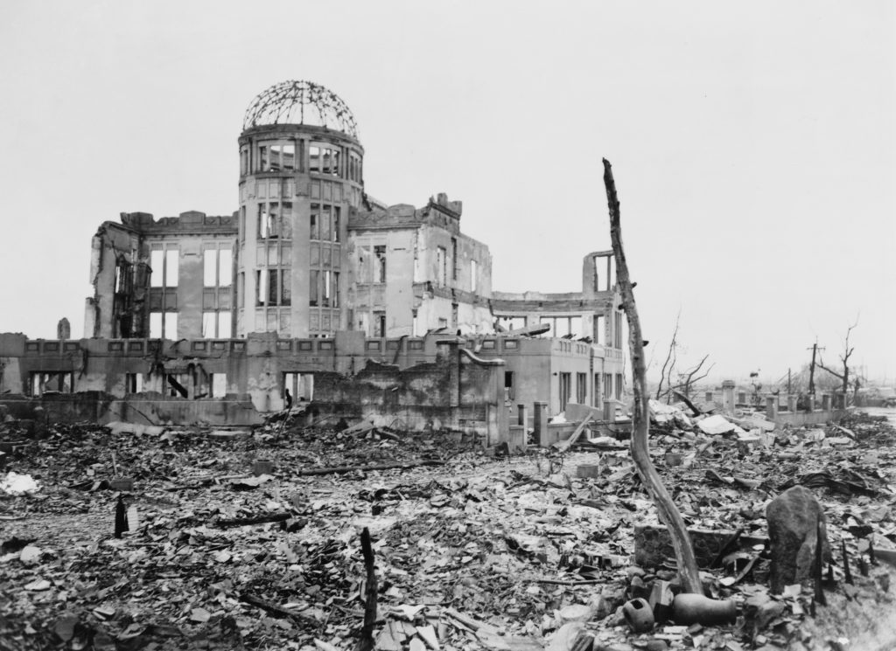

ผลกระทบหลังสงคราม

สงครามโลกครั้งที่ 2 ส่งผลกระทบอย่างรุนแรงต่อโลก มีผู้เสียชีวิตและบาดเจ็บเป็นจำนวนหลายสิบล้านคน รวมถึงประชาชนที่ได้รับผลกระทบจากการทิ้งระเบิด การสังหารหมู่ และการฆ่าล้างเผ่าพันธุ์ เมืองและโครงสร้างพื้นฐานของหลายประเทศถูกทำลาย เศรษฐกิจของประเทศที่เข้าร่วมสงครามได้รับความเสียหายอย่างหนัก หลังสงครามมีการก่อตั้ง องค์การสหประชาชาติ (UN) เพื่อช่วยรักษาสันติภาพและป้องกันไม่ให้เกิดสงครามขนาดใหญ่ขึ้นอีก นอกจากนี้ เยอรมนีถูกแบ่งออกเป็นเขตปกครอง และความขัดแย้งทางอุดมการณ์ระหว่างสหรัฐอเมริกากับสหภาพโซเวียตก็เพิ่มขึ้น จนนำไปสู่ สงครามเย็น ในเวลาต่อมา อีกทั้งประเทศอาณานิคมหลายแห่งเริ่มเรียกร้องเอกราช ส่งผลให้เกิดการเปลี่ยนแปลงทางการเมืองและความสัมพันธ์ระหว่างประเทศไปทั่วโลก